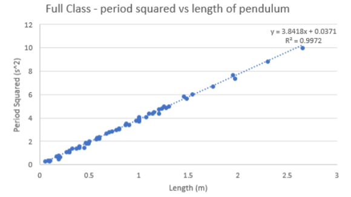
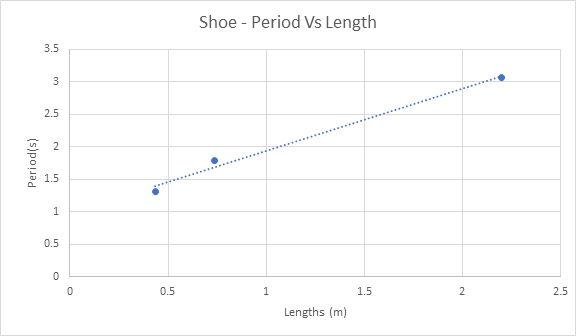
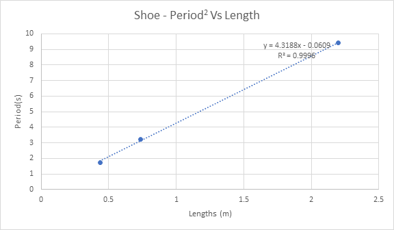

Stage 1 Physics | Practical Report | June 2018
A simple pendulum is a mass that is suspended off the ground with a string attached to a fixed pivot point that will allow it to swing from side to side. There are several forces acting upon it including gravity, tension (of string). In the vector diagram below (figure 1), FTENS is the string tension force, Fgrav is the force of gravity. Figure 2 shows the potential and kinetic energy transfers. As the mass of the pendulum is pulled downward towards the centre by gravity, kinetic energy increases, while potential energy decreases. As the pendulum swings up, kinetic energy decreases and potential energy increases.
Figure 1: Pendulum Force Vectors Diagram (Physicsclassroom.com, 2018)
Figure 2: Pendulum Kinetic and Potential Energy Diagram
In 1583, the well know Italian scientist Galileo observed a chandelier while in church and timed its period, or time for one oscillation with his heartbeat. After some research, he concluded that the period of all simple pendulums is always constant, and created a formula that is capable of finding the period of any simple pendulum:
In this equation, T is the period, L is the length of the string from the top to the centre of mass, and g is the acceleration of gravity at the Earth’s surface. However it is hard to comment on the mathematical relationships that exist in this formula because of the square root, however that can be removed by squaring both sides of the equation:
This formula can be tested and proven with an experiment, in which a simple pendulum is made, and the period is timed using a stopwatch. In the experiment, the value of L is changed each time, and would be seen that T2 is directly proportional to Length (T^2∝L), as when the length of the pendulum increases, the period would increase too. T2 is inversely proportional to gravity (T^2∝1/g), as when g is increased, T2 will decrease. Furthermore, the value of 2π and g in the formula is constant. According to the Australian Fundamental Gravity Network, which has several sites located around Australia, the acceleration of gravity in Darwin is approximately 9.78 ms-2.
The acceleration of gravity can also be proved to be this value using the simple pendulum experiment. After the period is found, the formula can be solved to find the equation for gravity:
The purpose of the experiment is to prove that Galileo’s formula is accurate. It is also to prove that the acceleration of gravity (in Darwin) is approximately 9.78 ms-2.
As the length of the string is increased, the period of the string will also increase. Galileo’s formula will also prove that gravity is approximately 9.78 ms-2.
| Variable | Reason | |
|---|---|---|
| Independent | L – Length (metres) | Length is the independent variable because it is the manipulation or change of the value of this variable that determines the value of the dependent variable. |
| Dependant | Period squared (seconds) | T squared is the dependent variable because it is determined by the independent variable and it is what is being measured. |
| Control | g - Gravity (m/s/s) | Theoretically, gravity does not change. It is the control variable because it must be kept the same for this experiment because it is what will be calculated later. |
| Hazard | Risk | Mitigation | Action |
|---|---|---|---|
| Falling of chair while taping pendulum to roof | Medium | Ask friend to hold chair or table to help keep balance | Check for immediate injuries, if serious, call emergency services, if not apply necessary first aid |
Table 1.0 - Results for plasticine pendulum
| Length (cm) | Trial 1 (s) | Trial 2 (s) | Trial 3 (s) | Average time (s) | Average period (s) | Period squared (s) |
|---|---|---|---|---|---|---|
| 30 | 21.31 | 20.98 | 21.2 | 21.16 | 1.05 | 1.1025 |
| 60 | 30.18 | 29.97 | 30.2 | 30.12 | 1.51 | 2.2801 |
| 80 | 34.89 | 35.07 | 34.59 | 39.85 | 1.74 | 3.0276 |
| 100 | 40.17 | 41.23 | 40.3 | 40.56 | 2.03 | 4.1209 |
| 120 | 42.51 | 42.64 | 41.5 | 41.88 | 2.09 | 4.3681 |
| 195 | 55.97 | 54.9 | 55.54 | 55.47 | 2.77 | 7.6729 |
| 230 | 59.63 | 59.56 | 59.3 | 59.5 | 2.97 | 8.8209 |
| 265 | 62.8 | 64.53 | 62.31 | 63.21 | 3.16 | 9.9856 |
Graph 1.1
Graph 1.2 (g = 10.34 m/s/s)
Graph 1.3
Graph 1.4 (g = 10.27 m/s/s)
Table 2.0 - Results of Shoe Pendulum
| Length (cm) | Trial 1 (s) | Trial 2 (s) | Trial 3 (s) | Average time (s) | Average period (s) | Period squared (s) | Gravity (m/s/s) |
|---|---|---|---|---|---|---|---|
| 43.5 | 26.19 | 26.85 | 26.19 | 26.41 | 1.32 | 1.7424 | 9.86 |
| 73.5 | 34.35 | 33.97 | 34.25 | 34.19 | 1.79 | 3.2041 | 9.06 |
| 220 | 61.13 | 61.38 | 61.65 | 61.39 | 3.07 | 9.4249 | 9.21 |
Graph 2.1
Graph 2.2 (g = 9.14 m/s/s)
Graph 2.3 (g = 10.05 m/s/s)
| Error | Effects on Results | How to Fix | |
|---|---|---|---|
| Random Error | Incorrectly measuring length of string | The length is a major part of Galileo’s formula as T2∝L. If the length recorded was higher than the actual length, T2 will therefore become higher, and the gradient will also increase. As the gradient is part of the calculation for gravity, having lots of these random errors will greatly affect the final result | Double check measurements. Measure and mark lengths on string before hanging string from roof (since trying to measure the length while it is still attached to the roof is harder) |
| Releasing the pendulum from a greater angle | When released at a greater angle, there will be a higher chance of drag/wind resistance which will slow the pendulum down, giving slightly inaccurate results | Set a maximum angle to measure each time before starting periods such as 20 degrees | |
| Systematic Error | Having humans operate timers | It cannot be guaranteed that a regular human will have the reaction time to accurately start and stop the timer at the precise moment it needs to happen. This means that the period calculations may be slightly off. | Have more trials. Record pendulum swinging with camera, and then go through video frame by frame to see exactly when the oscillations start and stop. |
| Using a show as the mass of the second simple pendulum | A shoe is not a balanced object. This means that it would be hard to find the centre of mass when measuring the length. This will make calculating gravity slightly inaccurate. | Research how to find centre of mass for shoe |
The acceleration of gravity was found to be 10.34ms-2 obtained from the plasticine pendulum results and 9.18ms-2 obtained from the shoe pendulum results. Both of these are over 0.5 off from the acceleration of gravity in Darwin according to the Australian Fundamental Gravity Network (which was 9.78ms-2) due to several random and systematic errors made. Despite this, when the average of these two results were calculated, gravity was found to be 9.74ms-2. While there were many errors made during the practical which produced results that weren’t entirely accurate, it can still be concluded that the purpose of the experiment to prove gravity was 9.78ms-2 was met to some extent.
Encyclopedia Britannica. (2018). Pendulum | device. [online] Available at: https://www.britannica.com/technology/pendulum [Accessed 27 May 2018].
Ga.gov.au. (2018). Australian Fundamental Gravity Network. [online] Available at: http://www.ga.gov.au/afgn/ [Accessed 27 May 2018].
Physicsclassroom.com. (2018). Pendulum Motion. [online] Available at: http://www.physicsclassroom.com/class/waves/Lesson-0/Pendulum-Motion [Accessed 5 Jun. 2018].